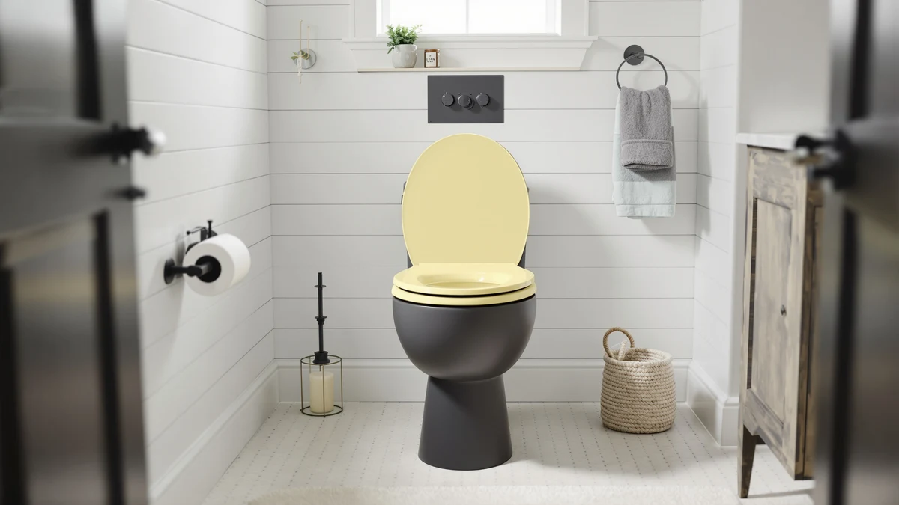

How to Clean Toilet Seat Yellow (2026)
Prices and picks verified as of August 2026. Independent, reader-supported reviews.


Things to Know Before You Buy
- Yellowing usually comes from hard water minerals and urine residue bonding to microscopic scratches in the plastic, not from a dirty seat alone.
- A vinegar soak followed by a baking soda scrub removes most yellow stains without bleach, which can degrade certain plastic and resin finishes over time.
- Abrasive pads and steel wool dull the seat's surface and create new scratches that trap stains faster the next time around.
- Seats with a textured or matte finish hold onto yellow discoloration more stubbornly than smooth, high-gloss plastic or enameled wood.
- If the yellow tint persists after two full cleaning attempts, the plastic has likely stained at a deep level and replacement is the more practical fix.
If you've searched for how to clean toilet seat yellow stains before, you already know the discoloration rarely comes off with a quick wipe. Hard water minerals, urine residue that seeps into hairline scratches, and UV exposure from a bathroom window react with the seat's plastic or resin coating and leave behind a yellow-brown film that regular toilet cleaner can't touch. This staining sits mostly on the surface, though, and a focused deep clean typically restores most of the seat's original color in under an hour.
Pulling yellow stains out of a plastic or resin toilet seat takes supplies you likely already keep under the sink. You'll soak the discolored areas, work a mild abrasive paste into the texture of the plastic, and finish with a rinse that won't scratch the finish or damage the hinges. If the seat has cracked, warped, or stayed yellow even after a proper deep clean, the picks near the end of this guide cover seats built to resist staining going forward.
What You'll Need
- Supplies: white vinegar, baking soda, and mild dish soap for lifting yellow stains from a toilet seat
- Tools: a non-abrasive scrub sponge and an old toothbrush for reaching the hinges and textured edges of a yellow toilet seat
Step 1: Clear the seat and mix a vinegar solution
Start by taking off anything sitting on or around the seat, including a padded cover, decorative mat, or child's seat insert, so you have full access to the plastic surface and the underside where grime tends to build up first. Wipe away loose dust and surface debris with a dry cloth before you introduce any liquid, since wet dust turns into a paste that spreads around instead of lifting off.
Mix equal parts white vinegar and warm water in a spray bottle or a small bowl. Vinegar's mild acidity breaks down the mineral deposits and urine salts responsible for most toilet seat yellow discoloration without stripping the glossy top coat the way bleach or ammonia-based cleaners can.
Step 2: Let the solution soak into the stained areas
Spray or wipe the vinegar mixture directly onto the yellow patches, paying extra attention to the underside of the seat and the area around the hinges, where residue collects and dries into a harder film. Let the solution sit for 15 to 20 minutes. This dwell time matters more than the amount of vinegar you use, since the acid needs contact time to break the bond between the stain and the plastic.
Keep the bathroom fan running or a window cracked while the vinegar works. If evaporation is a concern on a warm day, lay a damp towel loosely over the seat to keep the solution from drying out before the soak time is up.
Step 3: Scrub with a baking soda paste
Mix baking soda with a small amount of water until it forms a paste roughly the texture of toothpaste. Spread it over the areas you soaked in step two and scrub in small circular motions using a non-abrasive sponge or a soft cloth. The mild grit in baking soda lifts the loosened stain without scratching the plastic the way a green scouring pad or steel wool would.
Add a few drops of mild dish soap to the sponge if the yellow toilet seat still looks dull after the first pass. The soap cuts through any remaining oily residue that vinegar and baking soda alone don't fully dissolve, especially on seats that haven't had a deep clean in a year or more.
Step 4: Detail the hinges and textured edges
Toilet seat hinges trap more grime than any other part of the seat, and that buildup often reads as a yellow ring right where the seat meets the bowl. Dip an old toothbrush into the baking soda paste and work it into the hinge mechanism, the underside bolt covers, and any ridges or embossed logos molded into the plastic.
Take the extra few minutes here even though it feels like the least visible part of the job. Skipped hinges are the most common reason a seat looks clean from the top but still shows yellow staining once you check underneath.
Step 5: Rinse, dry, and start a weekly wipe-down routine
Rinse the entire seat with warm water to remove the baking soda residue, since any paste left behind dries into a chalky film that attracts dust. Dry it completely with a clean towel, including the hinges and the underside, so moisture doesn't sit in the crevices and encourage new mineral buildup.
Once the seat is dry, wipe it down weekly with a diluted vinegar spray instead of waiting for stains to set again. Owners who keep up a short weekly wipe report their seats stay noticeably whiter for years, while seats that only get a full scrub occasionally tend to yellow again within a few months.
Common Mistakes to Avoid
The most common mistake is reaching for bleach or an abrasive cleanser as the first move. Bleach can react with certain plastic and resin coatings, especially on older seats, and leave a chalky or discolored patch that looks worse than the original yellow tint. Save bleach as a last resort, diluted and compared on a hidden spot first, and only after the vinegar and baking soda method hasn't worked.
Scrubbing with steel wool, a green scouring pad, or a stiff wire brush is another frequent error. These tools cut microscopic grooves into the plastic, and those grooves fill with the same minerals and residue that caused the yellow toilet seat problem in the first place, so the stain returns faster and darker than before.
Skipping the soak step is a shortcut that backfires. Scrubbing dry or barely dampened stains forces you to apply more pressure, which increases the risk of scratching, and it still leaves the deeper stain intact since the cleaning agent never had time to break the bond.
Finally, ignoring the hinges and underside leaves a visible ring even after the top surface looks spotless. A full clean has to cover every surface the seat touches, including the parts that stay hidden when the lid is up.
Our Top Picks
If the seat still looks dull or yellow after two full cleaning attempts, the plastic has likely absorbed the stain permanently and replacing it is the more practical fix. These three toilet seats are worth considering: the Round Marble is a naturally stain-resistant option, the Bemis 7300SLEC pairs a smooth slow-close finish with easy wipe-down maintenance, and the 1M Family seat adds a textured coating built to resist the same mineral buildup that caused the yellowing in the first place.

Editor's Pick
Round Marble Toilet Seat Natural
A naturally veined marble-look finish that hides minor water spotting between cleanings and won't discolor the way painted plastic seats do over time.
$42.99
Check Price on Amazon
Best Value
Bemis 7300SLEC Slow Close Toilet
A smooth, non-porous slow-close seat from a brand known for durability, priced low enough to replace a yellowed seat without a major expense.
$29.99
Check Price on Amazon
Premium Choice
1M Family Toilet Seat Patented
Built with a textured, stain-resistant coating and a family-friendly design meant to hold its color longer than standard plastic seats.
$39.99
Check Price on AmazonWhy does a toilet seat turn yellow?
Toilet seat yellowing comes from a mix of hard water minerals, urine residue, and body oils bonding to microscopic scratches in the plastic.
Can I use bleach to whiten a yellow toilet seat?
Diluted bleach can work on some enameled wood seats, but it is risky on plastic and resin seats, where it often reacts with the coating and leaves a chalky or uneven patch.
Frequently Asked Questions
Why does a toilet seat turn yellow?
Toilet seat yellowing comes from a mix of hard water minerals, urine residue, and body oils bonding to microscopic scratches in the plastic. UV light from a bathroom window speeds up the process by breaking down the plastic's outer coating, and some bleach-based cleaners react with certain finishes and add to the discoloration instead of removing it.
Can I use bleach to whiten a yellow toilet seat?
Diluted bleach can work on some enameled wood seats, but it is risky on plastic and resin seats, where it often reacts with the coating and leaves a chalky or uneven patch. Test any bleach solution on a small hidden spot first, and try the vinegar and baking soda method before reaching for bleach.
How long does it take to clean a yellow toilet seat?
A full deep clean takes about 45 minutes from start to finish, including the 15 to 20 minute vinegar soak. Light maintenance wipes take under five minutes and, done weekly, keep new yellow stains from forming between deep cleans.
Will yellow stains come back after cleaning?
They can, especially if the plastic already has surface scratches that trap minerals and residue. Reviewers who stick to a weekly wipe-down routine report their seats stay lighter for years, while seats that only get cleaned occasionally tend to yellow again within a few months.
What if the yellow stains won't come out at all?
If two full cleaning attempts with the vinegar and baking soda method don't lift the color, the stain has likely set into the plastic at a level no surface cleaner reaches. At that point, replacing the seat is more practical than continuing to scrub, and a stain-resistant seat prevents the same issue from recurring.
Verdict
Cleaning a yellow toilet seat comes down to patience more than harsh chemicals. Vinegar loosens the mineral and residue buildup, baking soda provides enough abrasion to lift the stain without scratching the plastic, and a consistent weekly wipe-down keeps new yellowing from setting in. Skip the bleach and steel wool. Both can do more damage to the seat's finish than the original stain ever did.
If you've worked through the full process above and the seat still carries a dull yellow tint, the discoloration has likely penetrated the plastic beyond what any cleaning method can fix. In that case, a naturally stain-resistant option like the Round Marble Toilet Seat is worth the switch, since its finish resists the same water spotting and residue buildup that caused the original problem. For most households, though, a thorough vinegar and baking soda clean followed by regular maintenance is enough to keep a toilet seat looking new for years.